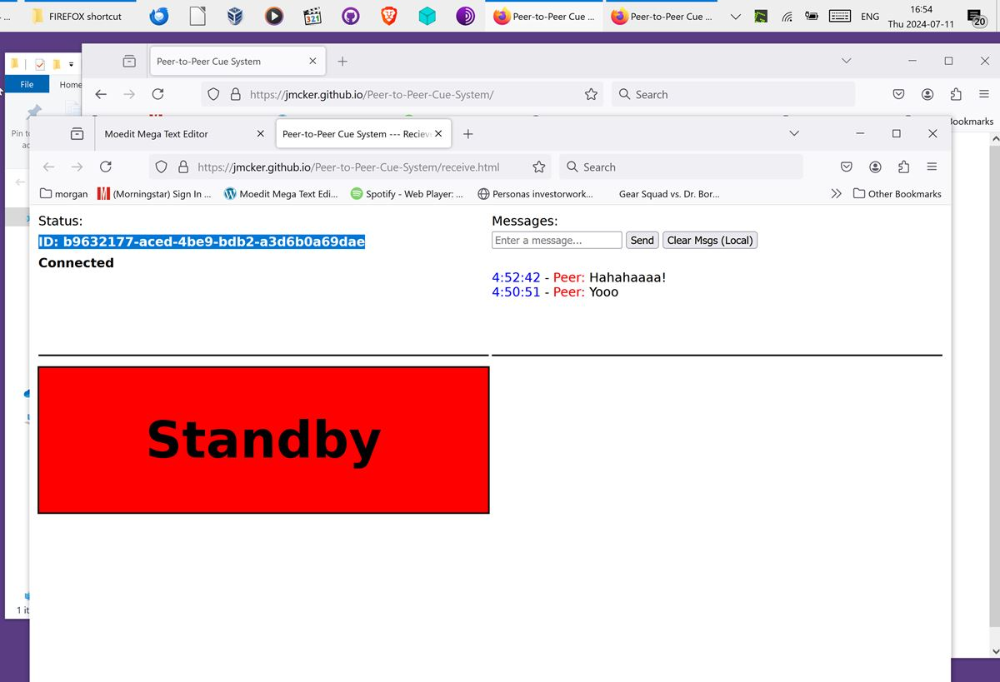
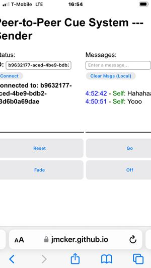
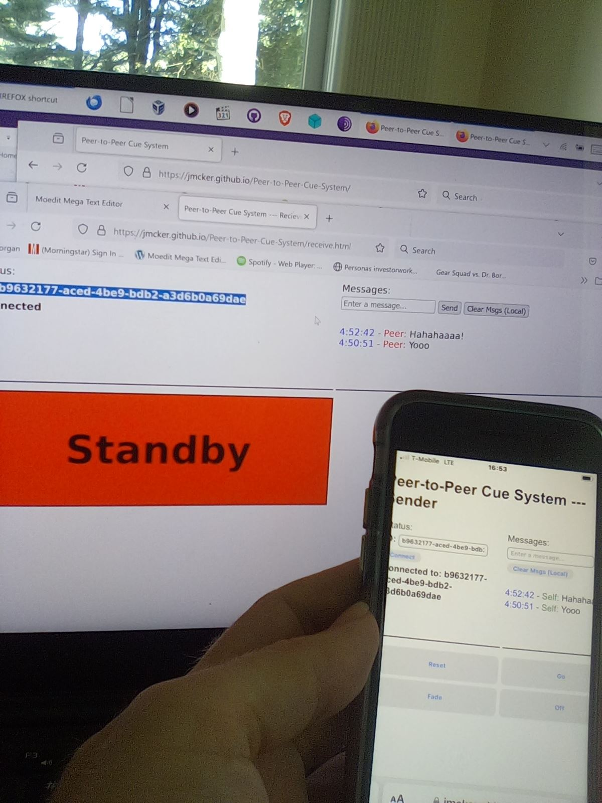

檸檬媽媽lemonmama.com2025 February Blog Posts - 2025年二月部落格文章
--------------- #0081 推銷 Promoted: YOUR SPONSOR LINK HERE 2025-02-03 1023 by Morgan Jassen on lemonmama.com#0081 - Javascript Peer to Peer App Works to Send Message Between Browsers Including Across Networks and Across Devices
Why can't i just send a message from my web browser to any other web browser in the world? Like just using a free non-huge web browser app? Like a javascript app? Or even a cross-platform small free text messaging app? This is the year 2024. And so I searched it up a bunch. Around the same time I came across Jami, briar, quiet, Signal, etc. Also found this browser based javascript app, which is the subject of this blog post and the screenshots below. Spoiler alert, it works! and it's powerful. https://jmcker.github.io/Peer-to-Peer-Cue-System/ The verdict: yes p2p message sent in browser WORKS across networks p2p message in browser WORKS on same wifi network AND on separate internet networks Here is a link where I came across this: https://peerjs.com/examples https://jmcker.github.io/Peer-to-Peer-Cue-System/ this 'jmcker...' one did allow me to send a message under folloiwng conditions: YES like this: FROM iphone safari via WiFi (not via cell data) TO firefox on Windows 10. YES like this: FROM firefox windows 10 TO firefox windows 10 on same computer NO like this: FROM firefox on windows to firefox on ubuntu vm YES FROM safari iPhone (via T-Mobile cellular data) TO Windows 10 Firefox (via WiFi hooked to Comcast land cable internet connection) In short, what I did was on 'device/browser A', browse to the ...Peer-to-Peer-Cue-System/ page, initiate an app in my browser, then took the address/identifier and sent that to my other 'device/browser B' via another channel, and used that address to connect from browser B back to browser A and send a message both ways from B to A and another message from A to B. So, in short, it works. Pictures here: Picture 1 of 3:  Picture 2 of 3:  Picture 3 of 3:  In conclusion, this javascript app worked to send messages peer-to-peer from one device/browser to a second device/browser. It seemed pretty slick and nice initially so I thought to blog it out here. --------------- #xxxx 推銷 Promoted: Personal Budgeting Book | YOUR SPONSOR LINK HERE 2025-02-xx xxxx by Rowdy Pepper on lemonmama.com#xxxx - Blah Blah Blah Title Goes Here - Episodic Series xxx
First Sentence here... Body text goes here... More Body text... More Body text... In conclusion, ... ~~~ Copyright © under a triple license to the individual author and to lemonmama.com and to MIT License.
{kind=link}
{kind=link}
{kind=link}